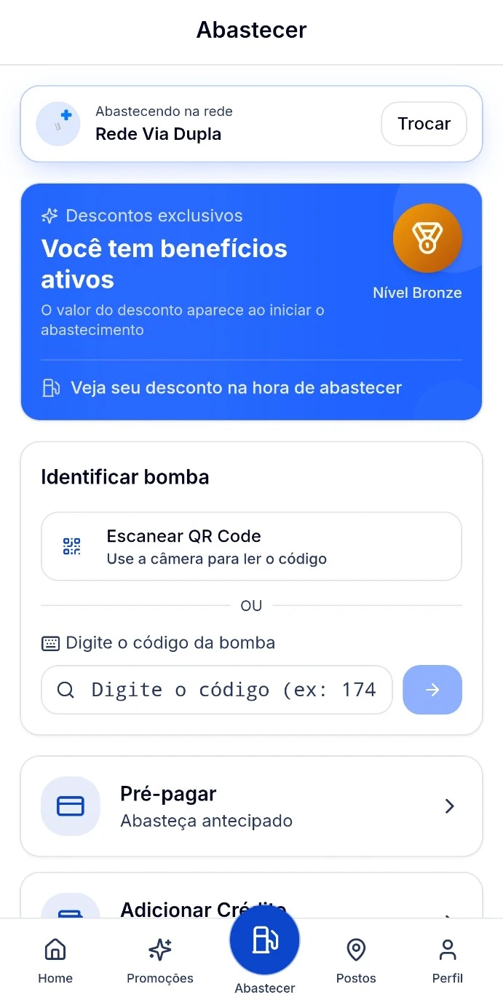

Encontre sua rede.
Confira as redes parceiras disponíveis e selecione a que você vai utilizar.
SEU APP DE FIDELIDADE MULTIRREDES
Agora o Fulltank+ é multirredes.
Um só app para os postos das redes parceiras.
Escolha sua rede, consulte os postos participantes e confira os benefícios disponíveis antes de abastecer.
Baixe grátis o app ↗ NA SUA ROTINA. DO SEU JEITO.
NA SUA ROTINA. DO SEU JEITO.
AGORA SOMOS MULTIRREDES
Você que já abastece na Via Dupla também pode consultar os postos das outras redes parceiras no Fulltank+. Tudo começa escolhendo a rede no aplicativo.
Confira as redes parceiras disponíveis e selecione a que você vai utilizar.
Consulte os postos participantes e as vantagens daquela rede.
Siga as orientações do app e do posto para utilizar o benefício disponível.
Cada rede tem suas condições. Pontos, saldos e benefícios seguem as regras da rede selecionada.
CADA PARADA PODE VALER MAIS
Combustível, cuidado com o carro e produtos participantes. Confira o que está disponível na sua rede.
NO ABASTECIMENTO
Veja o valor do benefício no app ao iniciar o abastecimento e consulte as condições do posto.
Faça uma simulação →Consulte benefícios em troca de óleo, lubrificantes e aditivos participantes.
Acompanhe pontos, nível e benefícios conforme as regras da sua rede.
Encontre postos das redes parceiras e confira a rede ativa antes de abastecer.
Produtos, serviços, descontos e pontos dependem da disponibilidade e das condições de cada rede e posto.
É ASSIM QUE FUNCIONA
Sem complicar sua próxima parada. Veja as telas do app e descubra por onde começar.
Deixe o app pronto para a sua próxima parada.
Confira as opções participantes no aplicativo.
Use o QR Code ou o código da bomba e siga as orientações do app e do posto.
FAÇA A CONTA COM A SUA ROTINA
Quanto representa um desconto de R$ 0,10 por litro no seu mês? Arraste e veja uma simulação.
Simulação ilustrativa. R$ 0,10 por litro não é um desconto fixo ou garantido. Consulte o valor disponível e as condições no app.
PRONTO PARA A PRÓXIMA PARADA?
Baixe grátis o Fulltank+ e confira os benefícios disponíveis para você.
Consulte postos participantes e condições no aplicativo.
PRA NÃO FICAR DÚVIDA
Você utiliza o mesmo Fulltank+ para consultar e abastecer nos postos participantes de diferentes redes parceiras. Selecione a rede no aplicativo e confira os postos, benefícios e condições disponíveis para ela.
Sim, o download é gratuito. Os benefícios variam conforme o posto, a rede e as condições de cada oferta.
Consulte os postos participantes das redes parceiras no app e confira a rede ativa antes de usar o benefício.
Não. Esse valor é apenas a referência da simulação. O valor real aparece no app ao iniciar o abastecimento.
Consulte as regras da rede ativa. Não presuma que pontos e benefícios sejam transferíveis entre redes.